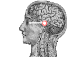
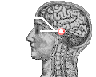
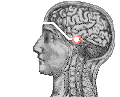
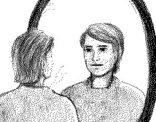
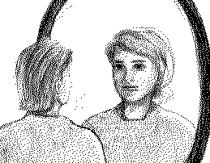
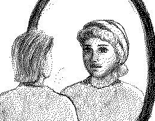
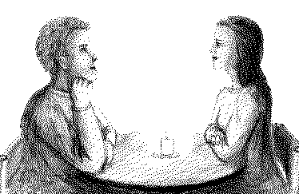
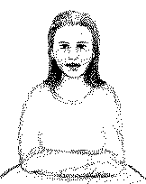
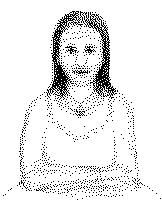
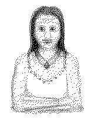

Third Eye, Activation & Basic Usage
written by Rene K. Mueller
Activation and basic usage
Drawings by Lori E. Gilbert
As previously discussed in perception of subtle realms, we have physical and non-physical senses, and both have their own area to serve us in how we act. To go a step further, I would like to describe here an easy way to activate the 3rd-eye, or the inner eye, in a passive way: looking and perceiving.
Introduction
We are truely spirits, who occupy physical bodies to participate in physical reality: without our bodies we couldn't be a part of it. We can consider the physical body as a vehicle, or using a modern word, a craft.
Most spirits forget that they are truely spirits, spiritual beings. But how? We get overwhelmed by a dimension we didn't experience before, we even didn't know what time or space is, because as spirits we didn't experience such a limiting reality as here. That's what the call was we heared, and many couldn't reject its challenge. We entered by many adjustments, called dimensional doors, until we were able to enter a human-body. What we call taking birth, is a long prepared-for procedure. We finally enter and accept the body, when we take birth. But then as babies we are in a period of time where we leave and enter easily, as our vehicle is new for us and we aren't yet so identified and addicted to it.
Growing up means the spirit learns to use the vehicle, we learn to walk, even speak and behave in social conformity. This learning pulls our attention to the physical senses, so better we learn to interpret the signals, and better we operate with our physical body here.
We as spiritual beings naturally see, it's part of our nature. Seeing through eyes, which means looking through two holes, but which serves us with many fancy signals from a colorful toy, even TV or even WWW such as here. We can refocus our inner eye away from the physical eyes. This is called activation of third-eye, in a passive observing way.
Some of you maybe heard of or even experienced what is known as Shape-Shifting or Mirror Gazing, looking at aspects of yourself. This is one step of the usage of the third-eye.
Pre-Stages of Third Eye Perceptions
Before I go ahead with my personal view on third-eye, let me describe some pre-stages.
I believe, that all people have third-eye experiences, but most people do not pay attention to them, as their belief-systems simply reject these experiences as real. A part of this text may help to make one become aware of it again, and accept it as part of reality, and no longer para-normal, but simply normal.
Preparation and Training
One issue of preparation is, reading such an article about the third eye, even your conscious mind catches a part of the concept. It's not meant to make-up or even create a huge amount of expectation, but an openness, wordly an open mind.
Here are some well known preparations, which you can practice to open and prepare yourself. You can do it daily, or even weekly in circles, whatever you prefer.
It's simply important, that you can calm with open eyes. It's much easier to calm and relax yourself with closed eyes, when the visual influences are disabled that distract our inner being, but for this procedure it's quite helpful to reach the same state with open eyes.
A Theoretical Background
As said before, you inhabit a physical body, which serves you with physical senses, where the visual sense, our eyes, feed us with thousands of electrical signals every second. It's no surprise that it's not well known to look without physical eyes, especially in the technical times we live in today, where everything has to be multimedia to get our attention.



By the way, the issue of having open eyes is to make it easier to allow becoming aware of the inner eye. Some people, even experienced spiritually aware people prefer to see with closed physical eyes. In our strong belief-system most of us use to define, that we only can see with open eyes. Anyway, in this case I like to describe, it's easier to do it with open eyes.
Somehow, this theoretical background is my chosen belief-system to comprehend mentally the experiences I personally made. Take it as a personal truth, not more.
The Activation, Its Passive Usage
I suggest two preferred kinds of procedures to achieve the best results.
Mirror Watching
A Single Person
This version is a further practice of one of the relaxation suggestions I made above:

Watch your face in a mirror, with dimmed light. Make sure you are alone, or you know that no one will interrupt you, as you have to slip into a very relaxed state of consciousness, where any physical interruption may affect you much much deeper. Choose maybe an evening, not a special time, but maybe after work, when you are perhaps already a bit tired physical and mentally. If you feel really tired, don't practice it or don't even urge or strain yourself to do it. Do it when you feel comfortable, it's important you feel comfortable, there is no competition to win or to constrain things. I say this, as I came across people who constrained things mentally, and blocked themselves with this urge.
Again, watch your face, relax yourself by a calming suggestion such as, "I'm in peace within myself, I simply watch my face to calm and find peace in me". Focus with your physical eyes on one point, between your eyes, forehead, or one single eye. Do not try to watch both eyes, because it will make you move your sight.
Don't move with your sight or blink your eyes, because it's necessary to allow your attention to move away from your physical eyes toward your inner eye.
Choose a point on your face you focus, and don't change it anymore. Remain on this point as long as possible, again don't constrain it, if you feel not comfortable doing so. After some moments, maybe 30-60 secs and you are fully relaxed, you will feel an warmth on your back, neck area. I do mention this, so that you simply get aware of your energy. If you don't feel anything special, don't worry, don't expect, but if you do feel it, know you are well underway.
The warmth is energy, which you attract by refocusing your attention. You can say, it's a type of preparing energy from your spirit-guides, or beings helping you in your spiritual path, or simply perceive it as presence of the good. It's not so important you know exactly what it is, or who it is. If it feels comfortable, open yourself even more. Imagine an inner door you open, while you still are looking at your face and this particular point.
After some moments you may see a short change in your own face, starting at the point you are looking at. Don't await this, but be open to allow it to happen. If you wait for it to happen with your mind to grab it, it will not happen.
You have to release the attention to watch with your physical eyes!

The change of your own face, is an overlapping picture which reaches your consciousness, the one picture served from your physical eyes will be smoothly overlapped like a slide by another face, another presence. This face may be humanoid.
When this happens, breath slowly and surround yourself with the best and most lightful energy that you can, and maybe close your eyes for a moment to give your eyes some moisture and cleansing for your physical eyes, as we are usually not experienced with having open eyes for 60 seconds or longer. Focus again on a point, maybe the same as before, and relax your sight again as much as possible, and you will slip very easily and faster until your face will change again.

If you see parts of someone else's face in yours, watch as an observer, but only look, don't judge what you see, even if it's a beautiful or grotesque face, just look, just watch.
This entire procedure maybe shouldn't go for longer than 5-10 minutes, and if you don't see anything after 2-3 minutes, stop it. Again, no constraining, but allowance. Don't even judge yourself if nothing happens the first time.
This Mirror Watching is a subset of the so-called Mirror Magick.
In this context, the mirror is generally used to focus the attention and will
to make affirmations, for example, to call spirits, or even focus on third
eye.
Watching Faces, or Shape Shifting
For Two Persons
This is the way I would prefer for most who have already some experiences with the mirror, even if they are just small and short snapshots of other faces in your own.
Ask a friend, who is interested in energies, as well as meditation and who you can openly share spiritual concepts with, without fearing that he or she may laugh at you. Some basic knowledge of chakras may be very good for both of you to know. Practice a relaxing meditation, for 10-15 minutes, like surround yourself with light, and balance all the trouble and distraction from your daily life.
Choose two chairs, and maybe a table with a small little candle in the middle, but it's not especially necessary, it simply helps you to relax better, and shifts the consciousness into a more relaxed state. You could also sit on the ground, but make sure you are comfortable, I can't repeat that enough. Keep about 1.5 to 2 meters distance between you and your friend. Make sure that there is no direct light, dim any artificial light, or use a candle as mentioned.

Look at each other's face, choose one point in the face of each other, either the nose, the point between the eyes, the forehead or whatever. It's not important where you look with your physical eyes, it is important though that you relax your sight totally. Even as said before, don't move your sight anymore when you have anchored your sight, and don't blink anymore if possible. Every blink of your eye-lids brings your inner attention back to your physical eyes, so it is therefore important you allow your attention to move away from the physical sight by relaxing mentally as well as physically.
Breath deeply, and feel whether energy surrounds you, as in the example of warmth around your head, face or back of the neck. Warmth in your face will indicate the energy the other one radiates by his or hear third-eye; warmth on the back, upper part of body or even neck indicates a coming presence entering your aura, attracted by the activity.



The moment you see something, speak out what you see ... relax again and focus back until you see another face. Allow also your friend to focus, and maybe wait until he or she gets a glimpse of a change. Again, there is no competition to win, seeing something doesn't mean it's better. If it's happening fine, if it doesn't happen fine too. Help each other with patience. If it works easily, describe the face while you see it.
At the beginning you maybe will have difficulties focus on one face, as there may appear 10-15 different faces during a very few seconds, as if you are watching a slide-show, but someone doesn't wait until you can grasp its meaning. It's like you see, but you have to learn to turn the channel smoothly, like a radio station. If there is a face, which attracts you, and you remember it well for that short time, think of this face, and allow yourself deeply to move back to this face, smoothly. It takes training to focus on one presence longer.
Other activations
Crystal Sphere: This I didn't experienced myself, but it's just another way to relax the physical eyes, to move the attention to the inner eye. The crystal-sphere allows by its physical structure, to recognize no real pattern to begin to search astrally for connected presences and energies. When watching faces, you go with a key, even the face. The difference with the sphere, is you have to build within yourself a key, for what you are looking for.
Candle: The candle initiation I heard of, but I don't know exactly how it's done. It seems, that the preparation technique of using a candle is used to reach a certain state of consciousness, where other beings can be perceived in the flame. Often some kind of ceremonies are involved to invoke spirits, who support the activation.
In case you know some of other procedures I may list here, drop me a line by email.
If you are successful fast, practice as often as possible so you feel comfortable - to make your conscious mind ready to allow you to perceive in your daily-life with the inner eye as well, not just in a prepared surrounding.
In case nothing happens, absolutly no feeling, no changing of the face, your attention may be strictly on the physical, which is ok. I met a lot of people hanging arround and partly rejecting their being on the physical, and its better for them to ground themselves first beforehand, in order to train psychic abilities such as this third-eye example. If the time is right, you might come across other ways to train your subtle senses. Be open, and not disappointed about yourself.
Further Steps
When you practice Watching Faces or Shape Shifting weekly, and you get skilled in focusing also during daily-light and moving faces, you may take pictures, and focus on them.
Focus as described above, and form a key, to attract the connected energies of the picture. This key is an inner question and thought-pattern which you broadcast literally with your mind. It's different than channeling, as you receive a picture related to the picture. It will tend to be a face too, but not necessarily. If other face-forms appear, be open, don't judge or censor them with your current belief-system.
Watch people's face around you. While you talk to them, watch their aspects they keep, it will give you a glimpse of their bigger personality, that each of us is. You may perceive aspects of someone's personality, that you may connect with the concept of past-lives, or you might see a personality aspect one is balancing in his or her present life.
Some hints about things you may experience when you are a bit skilled:
I get headache when doing this, what can I do?
Well, it's like you re-use something you haven't used for a very long
time, and your brain has problems grasping all the information. It could be
also, that you have an energy-blockage in the third-eye chakra. Try putting
one hand on your heart-chakra, and the other one on the forehead, then change
with the one hand from your forehead to back of your head. It may help.
Especially after the first time you watch with third-eye you may experience a
headache the next day or so, but it shouldn't be heavy headache.
There are a lot of faces, what does that mean?
This person is dealing with a lot of personality aspects, which may be
perceived in a spiritual manner as entities in her or his aura. I tend to
remain in silence and not share this perception, as I made the experience that
it does disturb the person even more than help her. Maybe mention the major
impression of all faces, for example fear, or not being respected. Support
this person with words of understanding and suggestions of integration of the
so-called denied aspects of her or himself. People who tend to judge
themselves being unworthy tend to have a lot of faces of sadness, or beings in
their auras which have distorted looks of accidents or sickness when they left
their bodies, and now had found an embodied being, who shares the same view of
him or herself. It's a symbiotic relationship of sympathy, not a case to
judge.
I see freaky and ugly faces, what does it mean?
Freaky faces tend to be associated with mentally unsteady people, who have
no focus, and tend to be attracted by everything which seems to give them
something. Ugly faces, there you have to distinguish very carefully, sometimes
there are past-lives coming through, where other kinds of beauty counted in
society that may not be like today. Sometimes, with people who are afraid of
getting fat, you may see very fat faces. Understand that they fear to repeat
this again, and have a difficult connection with their bodies.
How do I know, whether it's a being, or a past-life?
Generally speaking, you see associated energies. Your inner knowledge will
allow you to understand the bigger picture. Non-balanced past-lives, which
someone rejects inside, appear as another being in his or her aura, or even
attract like-minded bounded entities. Don't define it according your current
belief-system, where past-lives are a part too, maybe read
Reincarnation and The Self for some additional understanding or
suggestions. I personally need to use some time (from minutes, hours, even
months), before I'm able to sort out all the impressions I've gotten and
understand within me, when I watched with the third-eye to someone before.
There is no other face, but the same just a bit younger. What does
it mean?
I personally only saw one single person, where I shifted my focus and
watched with my third-eye, and the face didn't change, but got bright and more
intense in appearance than the physical view I had before. When I tried to
find out what it did mean, I received the hint, that this person indeed has
intergrated all aspects of himself, and that this person is to become
complete, self-realized.
I can't watch animal faces, what now?
It takes some experience to do this. I did it with our dog and saw a
similar dog in him, but I couldn't get any more impressions. Once I tried with
our hare, and he had no face, but he turned into a bright glowing white ball
... it touched me so deeply, I can't describe here in words. It made me
remember the divinity of all creatures.
Is it for sure that the things I see are connected to the person?
Yes, and to you too. You look with the key-pattern of the other person's
face into the pool of all patterns. The more skilled you are, the deeper the
patterns you will get. Every piece of information is given to you in
understanding. You may experience also some cases, where you are not permitted
to get information. You will feel or even listen to your spirit-guides, who
are always involved in the moment you watch with your third-eye. The more open
you are, the more universal information you can access. If you have a strong
belief-system, the more you limit yourself in order to understand the things
you perceive.
When meditating it's said not to drink alcohol or eat meat, the same
for third-eye watching?
Well, alcohol affects the solar-plexus very much, as well as the throat
chakra where a part of the subtle energy of the alcohol gets absorbed. In the
case of meat, especially raw meat, it does attract beings who have experienced
the same death. Check out by watching a slaugtherhouse with the third-eye, and
you will know what I mean. As most of us are opening and starting to use the
charkas consciously, you might try to reduce any possible influence which
might distort your perception.
To whom I may share this third-eye activation?
Everyone you feel might be open, and understand its meaning. Those who are
not able to handle it, will not able to see. The only additional thing I may
say is, don't play with it, but use it to bring understanding of the subtle
reality into this world.
This is so far some of the common issues I came across when I showed people how to watch with the third-eye. If you have some experiences with it you think I should add here, let me know too.
Advanced States
Lucid Sight
A further step in looking with the third-eye, I call Lucid Sight. I experienced it a few times, and so far haven't read anything about it. I only once listened to a professional psychic who saw my spirit-guardians and described their appearance, and I honestly doubted that she saw them. Some time later, when I trained my third-eye a bit more and I saw light-beings, I knew she possibly was right in the way she saw them.
If you are focusing on the person, and you move away from the face, for example to the outline, and you start to see the dull milky aura of the person, you even have to let go more of your watching with the physical eyes. You slip into a trance like state, but you are fully conscious, your mind is totally passive, observing, a very peaceful state. Slowly the entire surrounding begins glowing by itself, not only the person you looking at, but the wall, and all things standing around.
When I remained in this state, my sight got expanded, not fully spherical 360 degrees, but maybe 240 degrees, as I could see things behind my shoulders glowing, and I felt, how I literally gave up watching with my physical eyes, as I no longer had stereoscopic view, but one intensive looking and feeling of living energy in the entire room I was sitting in.
You will see glowing smoke like dancing energies, and you will see your own aura or energy flooding your sight, and everything will get brighter and brighter without any need for artificial light. You might be able to see light-beings standing or being present in the room, or maybe just a human-like outline, which becomes a glowing presence of light, who are assiting you and the people who gathered for the session.
Out of Body Experience (OBE)
A further state of Lucid Sight is, your sight expands to full spherical 360 degrees, and you feel you are in the middle of your head (point of presence), and then, if you are fully centered in your being, you leave your body fully conscious and you feel you're watching like a bee, you feel very small and the room will getting huge, and you will see everything in spherical 360 degree view.
Charles Goldmann wrote in his OBE, Spiritualist Technique: "... one phase of mediumship, which is called 'traveling clairvoyance' is the out of body state. "Where the medium is conscious of leaving the body, and in that state views the surroundings, we use the term 'traveling clairvoyance."
I honestly have to say, that I always faced a deep fear when I reached this state, and I just move a bit out of my head, and slipped immediately back inside in the middle of my head, but I could keep looking nearly 360 degrees. As said, it's a very very peaceful state, somehow, as reality is then even more real, more vivid.
I will write later about other approaches to achieve an out-of-body state more active.
Active Using
Well, that's all that is passively meant, above. There are many different intensities to use third-eye in conscious active way.
Visualizing
A lot of teachings of visualization are done today, in meditation circles, OBE interested groups, uand now modern management teachings. You manifest with the third-eye, and with the force of the heart and base chakra. If you visualize, you pull astral and etheric energies toward you, where you act as modeller.
Managers: They visualize actively, and ground themselves with the 1st base chakra to be able estimate the success of the business, then achieve a business and company that flourishes: "Your success is of your own creation". Today managers are kind of half-aware yogis, who manifest things with material energy called money. But often spiritually aware people judge those, who are deep in materialism, but those spirits simply learn to handle energy here, and are often overwhelmed by its usage.
Artists: They usually perceive more, and control with the third-eye and physical eyes the transformation of the higher-dimensional patterns into matter (the picture). For example, a very intense picture drawn by an artist has a physical appearance, and an astral aspect as well, and if the artist was balanced when he or she drew it, we feel it and it does deeply touch us. One of those cultures that was conscious of this connection was the Egyptian culture with its hieroglyphs, which indeed are more than physical symbols.
Scientists/Engineers: As partly described in the text about spaceships (discussing conscious and unconscious creation of spacecrafts), scientists act as visualizers too, especially when they have to make theoretical research available for industry. Making a plan, then drawing symbols to make other people aware of to create a physical thing, is mainly based on the ability to transform higher realities into the limited physical reality.
Again, everything we affect, may it be cooking, painting a wall, signing a contract, driving a car or riding a bicycle, has an astral aspect, which is more real than the physical aspect. The connection of both is the secret of every success.
Full activation
The full activation of the third-eye with the kundalini is a major step, which needs to be assisted by a teacher or guru. I'm not especially a follower of guru-ism, but I honestly have to say, without guidance of an experienced embodied teacher or a full-conscious remembrance of a past-life you where received the teaching already, it's not good to do so.
As long as the third-eye is somehow isolated in use, there is less to achieve. For example, the moment you also open other chakras to perceive the subtle reality, you not only get pictures, but feelings and emotion which may help much much more to understand these impressions. The same for the active usage, if you work consciously with base-charka (full acceptance of incarnation, fully grounded), and the heart-charka, and the crown as well (acceptance of a higher purpose of your life), you may indeed experience miracles.
Anyway, full activation of the third-eye is connected to the full balance of all other chakras, which is the kundalini, which finally leads to the true enlightment of an embodied spirit. There is no short-cut possible to being fully balanced in yourself . . .
I will add later some affirmations for the active usage.
So far, those are my thoughts on the third-eye, and some associated subjects. Take it as a personal view and belief-system, and if you think it serves you, fine. If it's too far away from your own reality, fine too. Everyone lives a life, and every life is different hopefully!
I will update this text infrequently.
Peace,
René K. Müller (kiwi@spiritweb.org)
Comments
Here some comments I received on this the text above:
3rd eye (my own opinion)
Lori E. Gilbert Diamond Integration, July 30, 1995
When I first experienced the third-eye viewing of another person shifting, it was when Rene showed this technique to me. It was the first time I had consciously tried such a thing. What I saw was like a shadow appearing superimposed over his face, that I could see when I did not try to focus too hard and was really open without much expectation. First I saw his face start to look like he was wearing glasses (though he does not) and it was as if he was a professor. It reminded me of pictures I had seen of English professors from maybe before the 1930's or so. I was also feeling a slight pressure in my forehead, and I felt very sleepy. Later, I saw his face seem to shift into a lion! The image was like a shadow of a lion's head over Rene's face.
About a month later I was at a meeting where a woman whose seminars and channelings I often attend, Paula Peterson, was channeling a being who said he was an ancient Mayan. It was so interesting because I could really see (third-eye kind) this being superimposed over her whole body as a shadow of what looked to me to be an ancient Mayan shaman. I have also seen these "shadows" when I have been channeling too, when I was being shown something during the channeling. (see Channeling, Method for Self Discovery and Healing).
I have seen some auras around people and things at times, when my perception was open to the experience, usually as a white light around the person, and maybe once or twice I've seen some colors in the aura. Usually I'm so surprised I lose my concentration, but it's not too hard to get the impressions back.
I have not had the experience (yet) of being able to see faces or beings become "light" in my third-eye viewings. But I have only been consciously doing this now for a few months, and I'm sure with more practice and with releasing limited beliefs, I'll be able to see more.
One thing I have learned about is how being in a very relaxed and somewhat meditative state does to your brain waves. Your brain frequency slows down from its usual beta "awake" state, into the alpha range, and when you get to that point that is just between being asleep and awake, your brain goes into the theta state, which is very receptive to other states of reality that you don't perceive when you are in the beta state. Lucid dreaming is one of the things you can have while in the theta state. For most of us, this brain-wave range of theta is rather difficult to get into and stay for any length of time since we don't practice going there much in western society since it is not considered "real"...it's more considered a dream state, not "reality." In my opinion, western society is wrong about this. All forms of experience are real to the person that perceives it, no matter if it was in our reality or realm of perception or not. The theta state is a doorway into other realms of reality. Third-eye viewing can occur most easily when our brain waves are in the frequency of theta (and alpha to a certain extent.)
I think that I was in the alpha state when I was seeing the shadows superimposed over Rene and Paula, as I felt relaxed and receptive at those times. I think I was going into the theta state when I felt sleepy and I would see something about Rene's face but I would lose it since I could not keep myself in that state. It is also sometimes hard to remember what you experience when you are in the theta state, because it puts us in touch with part of our subconscious that not very many people have integrated into their waking consciousness yet.
One way I've recently discovered of how you can practice getting yourself into theta state that is an alternative to the discipline of meditation (meditation is something I have a hard time with) is listening to music that has beat frequencies that are in the range of theta waves. Then when you listen to it and relax, your brain will begin to get into that same frequency through a process called entrainment. It works on the same principle as striking a tuning fork and placing it next to another tuning fork (of the same frequency) that has not been struck. The other tuning fork will begin to vibrate and sound the note through entrainment. (There is more to it than this and it deals with the physics of harmonics which I won't get into. There are plenty of books about this.)
Tibetan and quartz crystal bowls, when rubbed with a mallet, can create the kind of beat frequency that can alter your brain-wave state through entrainment. I have a tape which uses some of these instruments and nature sounds to create music to entrain your brain into the theta state. It is quite an interesting experience. This one is called "Brainwave Suite" and it is sold at regular music stores (at least in the US it is.)
These are just some ideas that may help if you like to try to develop your third-eye, from someone who is just starting out.
Lori Gilbert
MichaelTeachings.Com
Message On The Third Eye
Charles Goldman (cgoldman@execpc.com), 1 Aug 1995
Rene,
As I sat down to write a short essay on the Third Eye, the following channeled message began in my inner hearing. It was delivered sentence by sentence as it appears, without editing. If you want it, you have my permission to use it on your WWW site.
Your Friend
Chuck Goldman
MESSAGE ON THE THIRD EYE
It is often that we hear of people wishing that their third eye was open, well it is. There is nothing unusual about making the third eye stay open. It is through an act of will that the third eye will do what you want it to.
The third eye is basic to all spiritual work. It is the heart of the matter. The third eye can communicate what you need to know about the aspects of your life which are hidden to you. It is the center through which you see the world and others in it. Without the third eye there would be all pervading spiritual darkness about you.
The best way to keep the third eye open is to make sure that you have enough energy going through it from the chakra directly beneath it.
Actually, most of the energy which is moving through the third eye center has to come from your heart. This is where what is seen, heard, felt, touched, is absorbed by the inner self and given a final okay. It is there where you find the Golden gate, or doorway to all other chakric doors. If this median point is not clear, nor can your third eye be clear and insightful. The heart is a river through which all time flows. The river comes up from within through the other energy centers beneath it. The physical world is tied to the spiritual world here.
So if you are working on unblocking your third eye chakra, it is well to learn to clean up those actions which block the aura in the heart also.
The third eye can bring meaning to life. It is divided into quarters, each one blending with a specific shade or color within the aura. So a healthy third eye chakra has the appearance of a glittering jewel, composed not only of brilliant violet blue, but also of red, green, yellow and orange.
To hold an object in one's mind means that it is being held in the quadrant of this chakra which pertains to visualization. It is here that we compose individual images for our creation purposes.
We call these images day-dreams, but they are really open doorways through which you can manipulate or change the flow of energy, and therefore events which are happening to you.
To change what you perceive in the visualization quadrant of this chakra means that it will have a lasting effect on the subtle body's energy field. To cause a change in the energy field means that working relationships of patterns of energy have also changed. Color plays a role in this. To color an image with what you wish to get, or to give the image a corresponding coloration.
To color an image with blue means you want to relax the tension of that physical expression to which the image is attached. To color it with a particular shade of red brings concreteness of various kinds.
Red brings the healing ray to outworn or stale relationships, by giving those kindred spirits a bolstering of kundalini energy from the first chakra.
You may have to work hard at developing this chakra, which is the occultist's favorite. It may be impossible to reach the quality of expression that this chakra deems possible. But this third eye chakra steers us forever upward, for its tendency is to seek for knowledge in the higher, or crown chakra through which it is located.
The lower quadrant, to the left and right of the third eye chakra are for hearing, and the relationship of appearances. An eighth of this energy is blue on the left side and another eighth is blue on the right. These are connected to hearing, and the spiritual hearing of the inner ears. A clairvoyant both hears and sees on the spiritual planes. So the work of this chakra concerns the planes of existence where spirit is working as the primary method of manifestation. The blue of this hearing energy, emanates from the chakra just below it, known as the throat chakra, and through which the manifestation of sound has its basis of perception.
The third eye chakra can be attuned to in the following way. You must first sit comfortably and concentrate your mind on the place within where your daydreams occur. This may be impossible for certain individuals who are visually impaired. In which case, do the following, sense the area around the third eye, and breathe in to the count of four, hold to the count of two, out - four - hold two, until a sensation is reached within the vicinity of the third eye. Charge up this chakra, until you feel it comfortably energized. Notice the sensations now occurring, and that they are not the same ones as before you started this exercise.
Now for those whose sight is not impaired, but who are earnest seekers of divine knowing. Take several deep breaths and relax. Sit in loosely comfortable clothes, never tight, especially around the neck or collar. Leaning into your third eye chakra with your consciousness, hold onto whatever images are seen. Giving them no credence whatsoever. Change over the surrounding energy field to a pure black. This is an erasure technique.
From this point on recount to yourself any images that you may see, beginning with the black space. The more clear your images are, means the more energized your chakra is. This procedure can be done alone in a protected environment, or in a group setting, for shared visionary experience. This means you share your images with the other members of your group, or circle.
This practice will aid you in the development of clairvoyance, clairaudience and clairsentience. It will afford you an opportunity to perceive on a new plane of existence. One to which you will eventually return. It will also help you to better understand and guide yourself through the daily foibles of life.